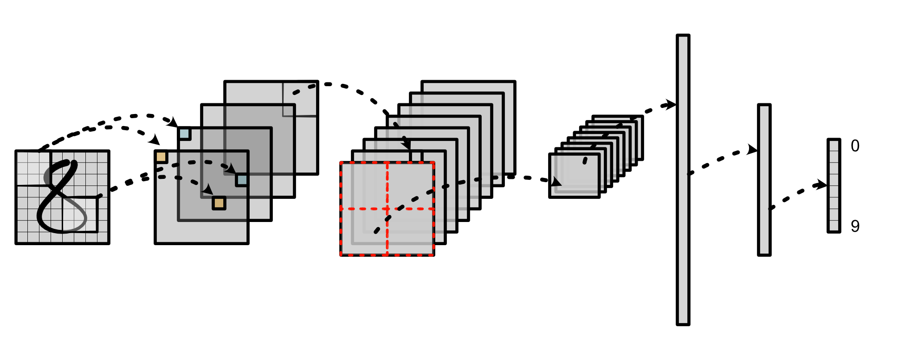
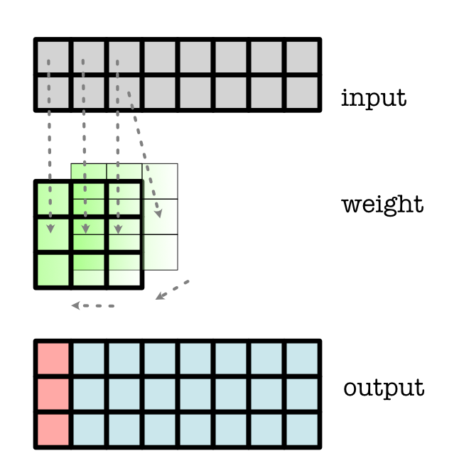
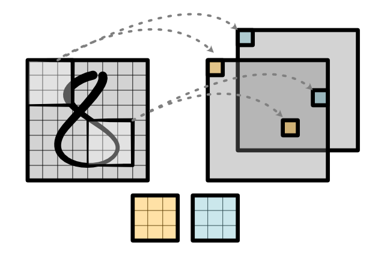

Module 4 - Networks¶


We now have a fully working deep learning library with most of the features of a real industrial system like Torch. To take advantage of this hard work, this module is entirely based on using the software framework. In particular, we are going to build an image recognition system. We will do this by build the infrastructure for a version of LeNet on MNIST: a classic convolutional neural network (CNN) for digit recognition.
All starter code is available in https://github.com/minitorch/Module-4 .
To begin, remember to activate your virtual environment first, and then clone your assignment:
>>> git clone {{STUDENT_ASSIGNMENT4_URL}}
>>> cd {{STUDENT_ASSIGNMENT_NAME}}
>>> pip install -Ue .
You need the files from previous assignments, so maker sure to pull them over to your new repo. We recommend you to get familiar with tensor.py, since you might find some of those functions useful for implementing this Module.
Additionally, you need to install and download an MNIST library:
>>> pip install python-mnist
>>> mnist_get_data.sh
(Mac OS users may need to install wget in order to run the .sh file.)
It will add a data/ directory in your module. You can try the following code to test the installation:
from mnist import MNIST
import numpy as np
import matplotlib.pyplot as plt
mndata = MNIST("data/")
images, labels = mndata.load_training()
im = np.array(images[0])
im = im.reshape(28, 28)
plt.imshow(im)
Be sure to continue to follow the Contributing guidelines.
Guides
Tasks¶
Task 4.1: 1D Convolution¶
Note
This task requires basic familiarity with convolution. Be sure to read the Guide on Convolution.
You will implement the 1D convolution in Numba. This function gets used by the forward and backward pass of conv1d.
{kind=link}
Todo
Complete the following function in minitorch/fast_conv.py, and pass tests marked as task4_1.
-
minitorch.tensor_conv1d(out, out_shape, out_strides, out_size, input, input_shape, input_strides, weight, weight_shape, weight_strides, reverse)¶ 1D Convolution implementation.
Given input tensor of
batch, in_channels, width
and weight tensor
out_channels, in_channels, k_width
Computes padded output of
batch, out_channels, width
reverse decides if weight is anchored left (False) or right. (See diagrams)
- Parameters
out (array) -- storage for out tensor.
out_shape (array) -- shape for out tensor.
out_strides (array) -- strides for out tensor.
out_size (int) -- size of the out tensor.
input (array) -- storage for input tensor.
input_shape (array) -- shape for input tensor.
input_strides (array) -- strides for input tensor.
weight (array) -- storage for input tensor.
weight_shape (array) -- shape for input tensor.
weight_strides (array) -- strides for input tensor.
reverse (bool) -- anchor weight at left or right
Task 4.2: 2D Convolution¶
Note
This task requires basic familiarity with convolution. Be sure to read the Guide on Convolution.
You will implement the 2D convolution in Numba. This function gets used by the forward and backward pass of conv2d.
{kind=link}
Todo
Complete the following function in minitorch/fast_conv.py, and pass tests marked as task4_2.
-
minitorch.tensor_conv2d(out, out_shape, out_strides, out_size, input, input_shape, input_strides, weight, weight_shape, weight_strides, reverse)¶ 2D Convolution implementation.
Given input tensor of
batch, in_channels, height, width
and weight tensor
out_channels, in_channels, k_height, k_width
Computes padded output of
batch, out_channels, height, width
Reverse decides if weight is anchored top-left (False) or bottom-right. (See diagrams)
- Parameters
out (array) -- storage for out tensor.
out_shape (array) -- shape for out tensor.
out_strides (array) -- strides for out tensor.
out_size (int) -- size of the out tensor.
input (array) -- storage for input tensor.
input_shape (array) -- shape for input tensor.
input_strides (array) -- strides for input tensor.
weight (array) -- storage for input tensor.
weight_shape (array) -- shape for input tensor.
weight_strides (array) -- strides for input tensor.
reverse (bool) -- anchor weight at top-left or bottom-right
Task 4.3: Pooling¶
Note
This task requires basic familiarity with pooling. Be sure to read the Guide on Pooling.
You will implement 2D pooling on tensors with an average operation.

Todo
Complete the following functions in minitorch/nn.py, and pass tests marked as task4_3.
-
minitorch.tile(input, kernel)¶ Reshape an image tensor for 2D pooling
- Parameters
input (
Tensor) -- batch x channel x height x widthkernel (pair of ints) -- height x width of pooling
- Returns
Tensor of size batch x channel x new_height x new_width x (kernel_height * kernel_width) as well as the new_height and new_width value.
- Return type
(
Tensor, int, int)
-
minitorch.avgpool2d(input, kernel)¶ Tiled average pooling 2D
- Parameters
input (
Tensor) -- batch x channel x height x widthkernel (pair of ints) -- height x width of pooling
- Returns
pooled tensor
- Return type
Tensor
Task 4.4: Softmax and Dropout¶
Note
This task requires basic familiarity with max reductions. Be sure to read the Guide on Softmax.
You will implement max, softmax, and log softmax on tensors as well as the dropout and max-pooling operations.


Todo
Complete the following functions in minitorch/nn.py, and pass tests marked as task4_4.
Add a property tests for the function in test/test_nn.py and ensure that you understand its gradient computation.
-
minitorch.max(*vals)¶
-
minitorch.softmax(input, dim)¶ Compute the softmax as a tensor.
\[z_i = \frac{e^{x_i}}{\sum_i e^{x_i}}\]- Parameters
input (
Tensor) -- input tensordim (int) -- dimension to apply softmax
- Returns
softmax tensor
- Return type
Tensor
-
minitorch.logsoftmax(input, dim)¶ Compute the log of the softmax as a tensor.
\[z_i = x_i - \log \sum_i e^{x_i}\]See https://en.wikipedia.org/wiki/LogSumExp#log-sum-exp_trick_for_log-domain_calculations
- Parameters
input (
Tensor) -- input tensordim (int) -- dimension to apply log-softmax
- Returns
log of softmax tensor
- Return type
Tensor
-
minitorch.maxpool2d(input, kernel)¶ Tiled max pooling 2D
- Parameters
input (
Tensor) -- batch x channel x height x widthkernel (pair of ints) -- height x width of pooling
- Returns
pooled tensor
- Return type
Tensor
-
minitorch.dropout(input, rate, ignore=False)¶ Dropout positions based on random noise.
- Parameters
input (
Tensor) -- input tensorrate (float) -- probability [0, 1) of dropping out each position
ignore (bool) -- skip dropout, i.e. do nothing at all
- Returns
tensor with random positions dropped out
- Return type
Tensor
Task 4.4b: Extra Credit¶
Implementing convolution and pooling efficiently is critical for large-scale image recognition. However, both are a bit harder than some of the basic CUDA functions we have written so far. For this task, add an extra file cuda_conv.py that implements conv2d or avgpool2d on CUDA.
Task 4.5: Training an Image Classifier¶
If your code works, you should now be able to move on to the MINIST training script in project/run_mnist_multiclass.py. This script has the same basic training setup as Module 3 - Efficiency, but now adapted to image classification. You need to implement Conv2D and Network. The Visdom visualization will show some hidden states of your model, like the following:
Todo
Train a model on MNIST, and add your training printout logs (i.e. training loss, performance on validation set) to the README.
Report the Visdom visualizations of your final model's hidden states at the end of training.